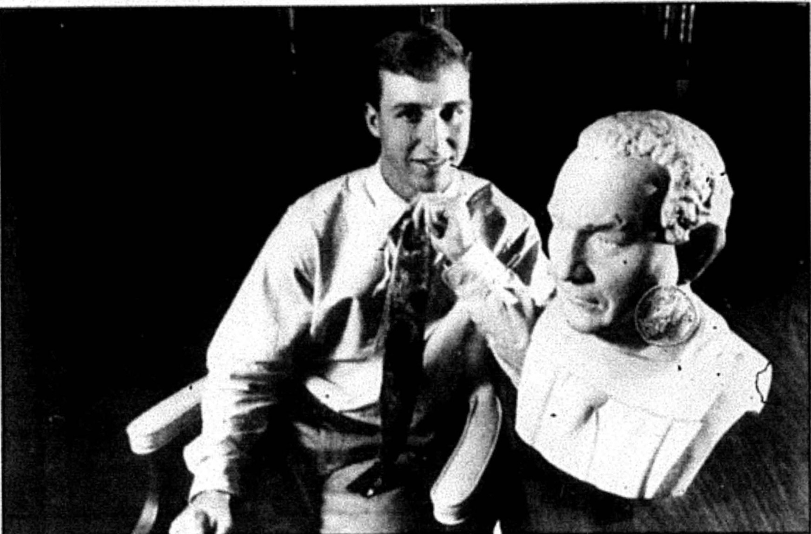

#
A delayed constitution reading
The fall semester opened with a stumble. The Herald reported that a scheduled reading of the SGA constitution had been delayed, in the same issue that covered rising tempers over campus parking.
Student Government Association · academic year

Later president of the College Heights Foundation. Interviewed by the Herald in 2022 on what has and has not changed. At least seventeen numbered resolutions survive from autumn 1993 - the fullest single-semester record in the collection.
Smith won the April 1993 election decisively. The Herald's headline was "Student Government Association Election: Donald Smith Rolls to Victory."
That September the Herald profiled the new president under the headline "Donald Smith Followed Grandfather's Lead All the Way to President's Office," tracing a family connection to the role he had just taken up.
Smith, from Elizabethtown, went on to become president of the College Heights Foundation. Interviewed by the Herald in 2022, he said that while the structure had changed over the years, "the fundamental principle for SGA to be a voice for the students has remained unphased," and that if SGA improves over time the WKU experience improves with it.
Sources for this account
Everyone the record shows in office this year. Each name goes to their own page, with every office they held and everything the archive says they did.
Reported July 1993 expenditures of $308.06 and August's of $5,467.56 and required his approval on all payments; the account stood at $38,977.50 on 12 October 1993, $16,839.28 on 22 March 1994 and $13,672.20 on 19 April 1994. He ran the organizational aid interviews of 12 and 13 October 1993.
SGA Minutes, 31 Aug 1993 and 19 Apr 1994Rewrote how legislation was filed, requiring it in by noon on Mondays on official forms or it would not be accepted, and administered the five-absence constitutional limit that sent members to Judicial Council. She ran the end-of-year awards nominations and the 26 April 1994 banquet at the Kentucky Museum.
SGA Minutes, 31 Aug 1993 and 29 Mar 1994Announced the first reading of the constitutional revision for 7 September 1993, required every Congress member to serve on two committees, and ran the committee behind the 3 November 1993 rally against tuition increases. He ran the April 1994 primary, called the 19 April 1994 meeting to order, and the Herald reported him standing against Rob Evans for president in that election.
SGA Minutes, 31 Aug 1993, 29 Mar 1994 and 19 Apr 1994Launched The Gavel, an SGA newspaper, along with an SGA informational brochure and new Herald advertising; he set 25 October 1993 as the deadline for Gavel articles and was still working on Herald ads in March 1994.
SGA Minutes, 31 Aug 1993 and 12 Oct 1993Approved as Foreman of the Judicial Council on 31 August 1993. He had been SGA president in 1992-93 and treasurer in 1991-92.
SGA Minutes, 31 Aug 1993Approved to the five-member Judicial Council on 31 August 1993.
SGA Minutes, 31 Aug 1993Approved to the five-member Judicial Council on 31 August 1993. He had been public relations vice president in 1992-93, where the minutes spell the surname Monahan.
SGA Minutes, 31 Aug 1993Approved to the five-member Judicial Council on 31 August 1993.
SGA Minutes, 31 Aug 1993Approved to the five-member Judicial Council on 31 August 1993.
SGA Minutes, 31 Aug 1993Appointed Parliamentarian on 31 August 1993, at the meeting that also seated the Judicial Council and approved the committee heads.
SGA Minutes, 31 Aug 1993Chaired Academic Affairs all year. Her committee discussed a meeting with Freida Eggleton about the Plus System and getting the President's Scholars listed in the Herald, and in March 1994 discussed the questions to go on SGA's own teacher evaluation, after the department heads failed the SGA resolution on evaluations. The minutes spell the surname both Raffaelli and Rafaelli.
SGA Minutes, 31 Aug 1993, 12 Oct 1993 and 29 Mar 1994Chaired Student Affairs from August 1993, working on a copy machine at Garrett Conference Center, a Quest machine at the top of the hill and the digital bulletin board outside Niteclass. By March 1994 he was chairing the Student Athletic committee and brought forward the bill for an all-athletics calendar.
SGA Minutes, 31 Aug 1993, 12 Oct 1993 and 29 Mar 1994Named Legislative Research chair on 31 August 1993. The roll calls spell the name both Derrek and Derek Duncan.
SGA Minutes, 31 Aug 1993Chairing Legislative Research by March 1994, when his committee reviewed Bill 94-3-S and the question of retaking C-graded courses before Academic Council. He was elected treasurer in the April 1994 election.
SGA Minutes, 29 Mar 1994 and 19 Apr 1994Chaired Campus Improvements all year, rewriting the Parking Availability resolution, running the Adopt-A-Spot programme and handling a tabled resolution on trimming shrubbery.
SGA Minutes, 31 Aug 1993 and 12 Oct 1993Chaired Public Relations from August 1993. She sent members out to volunteer for Head Start after the 12 October 1993 guest speakers, and announced that the SGA radio show would be called Word on Western, broadcast Wednesdays at 2:00 p.m. on 91.7 FM.
SGA Minutes, 31 Aug 1993 and 12 Oct 1993Chairing Public Relations by April 1994, when she reported the committee would be on the radio show. She was Committee Member of the Month in March 1994.
SGA Minutes, 19 Apr 1994Chairing Student Affairs by March 1994, when the committee worked on the Book Exchanger Board. He was elected Director of Public Relations in the April 1994 election.
SGA Minutes, 29 Mar 1994 and 19 Apr 1994The 14 things student government staged or ran for the campus this year, drawn from the chronology below. Every one of them also appears on the programmes page, which runs the whole sixty years together.
The fall semester opened with a stumble. The Herald reported that a scheduled reading of the SGA constitution had been delayed, in the same issue that covered rising tempers over campus parking.
Bill 93-1-F, introduced at the second meeting of the fall, proposed amendments to the SGA constitution. Constitutional revision stayed on the agenda through October, alongside the tuition rally the congress was planning.
The SGA approved changes to its congress in September while freshmen debated for open positions. The Herald covered both in a single mid-September issue.
Student government published a newsletter, The Gavel, whose first issue the archive dates October 1993. It ran beside the Word on Western radio show the congress named that same month. The archive holds a second issue filed under April 1994, though its catalogue description reads volume one, issue two, April 1992.
The October 12 meeting discussed a tuition rally, the budget, the Plus System and parking. The rally kept appearing in the minutes for the next month as tuition increases moved through the state process.
SGA Records: Meeting Minutes, 12 Oct 1993Read it on this site
Dr Jerry Wilder and Mike Gramling, director of the Head Start programme, were the guest speakers at the 12 October 1993 congress meeting. Public relations chairwoman Emily Brown then encouraged members to volunteer for Head Start. The treasurer reported the account balance that night at $38,977.50 with no expenditures since the previous meeting, and organizational aid interviews were being held on 12 and 13 October.
account balance $38,977.50
Public relations chairwoman Emily Brown told congress on 12 October 1993 that Word on Western would be the name of the SGA radio show, to be heard on 91.7 FM at 2 p.m. on Wednesdays. It followed the taped and then live show the previous administration had run under Joe Rains. The same meeting heard that Adopt-A-Spot places were still open and that articles for the SGA newsletter, The Gavel, were due by 25 October.
Administrative vice-president Scott Sivley told congress on 12 October 1993 that the Warren County judge-executive candidates, Miller and Buchanon, would be guests at the meeting of 26 October. The same minutes record speakers from Head Start before congress that evening.
President Donald Smith told congress on 12 October 1993 that Weekend in the Woods would be held on 23 and 24 October. The minutes carry one line on it and record nothing about who went, where it was held or what it cost.
Bill 93-4-F proposed formal SGA recognition of President's Scholars at WKU, one of the seventeen numbered pieces of legislation the fall 1993 congress produced.
Resolutions 93-4-F through 93-20-F survive in the correspondence files - the fullest single-semester record in the collection, and the best available answer to how much a WKU student senate actually passes in a working term.
Bill 93-6-F proposed purchasing and installing emergency telephones on campus. The Herald was still reporting on SGA's security phones the following February, and campus lighting and safety stayed on the agenda into the spring.
Bill 93-5-F, by Jill Reading and Eddie Myers for the Student Affairs Committee, allocated $150 to buy a large bulletin board and sign where students could list by category the books they wanted to sell. The board was to go on the first floor of Downing University Center across from the Marriott office. The bill argued that inflated book prices and minimal buy-back prices left students needing a place to sell to each other.
$150 for the board and sign
Bill 93-12-F proposed planting memorial trees in tribute to students who die while enrolled at WKU. It capped a heavy late-November run of legislation that also included child care grants for non-traditional students, a book exchange and opening the Downing University Center computer lab during finals.
The SGA Executive Council, acting on Resolution 93-18-F, wrote to administrators Katherine Tolbert, Dave Parrott, John Osborne and Ann Stathos asking the university to address housing for students during holiday breaks.
SGA Records: Correspondence - Resolution 93-18-F, 14 Dec 1993Read it on this site
The association adopted written guidelines governing how it would run student public forums, formalizing a process that had previously run ad hoc.
SGA Records: Guidelines for SGA Public Forums, Jan 1994Read it on this site
The Herald ran an opinion piece under the heading "Let's Work Together for Change" and put the question of how SGA could reach more students to its People Poll. The paper also ran a Stacy Curtis editorial cartoon offering a "recipe for better representation."
The Herald reported that student Angelo Rodriguez would switch places with President Thomas Meredith through SGA's President for a Day program. The same issue covered SGA's security phones on campus and a proposal to let students retake C grades that was killed in committee.
President Donald Smith congratulated Angelo Rodriguez at the 22 February 1994 meeting for serving as President for a Day. Smith also reported that the Frankfort reception had gone well with seventy legislators attending and fifteen Western students present. The treasurer put expenditures since the last meeting at $320.62, leaving a balance of $21,139.97.
expenditures $320.62; balance $21,139.97
Administrative vice president Scott Sivley reported on 22 February 1994 that Cultural Diversity Week was almost set and that the Adopt-A-Spot committee would meet on 24 February. Public relations vice president Bert Blevins reported that letters were going out to all organisations about Spirit Week. Both weeks were SGA-run additions to the spring calendar alongside the campus clean-up and President for a Day.
Bill 94-2-S, introduced on 1 March 1994, disbursed the $2,250 budgeted for organizational aid after the committee spent more than four hours across three meetings deciding between the applicants. Phi Beta Sigma took $350; Alpha Phi Omega, Campus Crusade for Christ and Delta Sigma Theta took $250 each; Beta Alpha Psi $200; the Fellowship of Christian Athletes $150; the Association of Resident Assistants, the Legion of Veterans, Students' Right to Life and United Student Activists $125 each; and the International Club, SOTA and the Topperettes $100 each. It passed on second reading on 8 March 1994.
$2,250 disbursed, in grants of $100 to $350
An SGA resolution covered by the Herald would have let students skip class, reported under the headline "Attendance: Student Government Association Resolution Would Let Students Skip Class."
Resolution 94-4-S proposed a three dollar student fee to support the Big Red Card program. The card system and its fees ran through the minutes for the rest of the spring.
SGA Records: Resolution 94-4-S, 8 Mar 1994Read it on this site
The March 29 meeting took up the resignation of basketball coach Ralph Willard along with the Big Red Card fee, teacher evaluations, emergency telephones, campus lighting and the coming elections. Dialogue Day and Adopt-a-Spot rounded out a crowded agenda.
SGA Records: Meeting Minutes, 29 Mar 1994Read it on this site
Bill 94-4-S, by Donald Smith and Scott Sivley, created the Points of Light programme to honour students who gave their time to help society, open to nomination by any campus organisation or individual and awarded by the executive officers at intervals through the year. Recipients were named in the Herald, given a certificate and honoured at SGA's annual banquet. The most outstanding recipient received an annual award called The Polaris, a commemorative plaque and a $100 SGA donation to the charity of their choice.
$100 donated to the Polaris winner's chosen charity
At the 29 March 1994 meeting the secretary took nominations for the year's awards: the Citizen's Award, Outstanding Congress Member, Outstanding Committee Member, the Dero Downing Award, the Kerrie Faye Stewart Memorial Award, the Mary Angela Norcia Memorial Award and the Dean Charles A. Keown Award. She also handed out certificates to past Committee and Congress Members of the Month. The banquet was set for 26 April at 6 p.m. in the Kentucky Museum.
The 29 March 1994 meeting recorded Bowling Green Operation Pride agreeing to help find donated trees for the SGA memorial tree programme for students who died while enrolled. Campus Improvements reported that Coca-Cola was donating ten bins for aluminium can recycling, that Adopt-A-Spot winners would be announced that week, and that the grievance boards had been dropped. Student Affairs reported it was working on the Book Exchanger board.
ten aluminium recycling bins donated by Coca-Cola
President Smith told the SGA meeting of 29 March 1994 that 6 April would be Dialogue Day, when students could talk with administrators in Niteclass from noon to 2 p.m. The public relations committee handed out flyers for it alongside flyers for the coming election. The same minutes record that security phones were expected to be in place by 26 April, and report on the memorial tree programme.
Administrative vice president Scott Sivley passed out flyers at the congress meeting of 29 March 1994 for a speech by Jesse Jackson Jr. set for 18 April. The minutes tie SGA to the publicity and to nothing else, naming no venue, sponsor or fee, and they do not show the speech took place.
The Herald reported that presidential candidate Scott Sivley had not followed SGA and university procedures during the election, in the same issue that carried the tallied results of the primary. The episode ran alongside the paper's get-out-the-vote editorial coverage.
The Herald closed the election season with "Rob Evans & Tara Higdon Ready to Lead Students." The same issue carried letters both defending the organization and, from future president Kristen Miller, a piece headlined "Student Government Association Defends Itself."
The Herald closed the year with two SGA stories: the year-end banquet recognizing award winners and officers, and a report that the association was cutting corners with its budget.
Files mirrored on this site from the university archive. Each one links back to the original record.
Written procedures the association adopted for running its student public forums, dated January 1994.
From the document · pages 1-2
Guidelines for student forums.Open the fileSGA Records: Guidelines for SGA Public Forums, Jan 1994
Letters from the SGA Executive Council to administrators Katherine Tolbert, Dave Parrott, John Osborne and Ann Stathos regarding student housing during holiday breaks, 14 December 1993.
From the document · pages 1
Letters ... regarding housing for students during holidays.Open the fileSGA Records: Correspondence - Resolution 93-18-F, 14 Dec 1993
Every source cited above, once, with the number of entries that rest on it.
Preferred citation
“1993-94,” SGA 60: Student Government at Western Kentucky University, 1966–2026, revised 6 August 2026, y/1993-94.html
Where a name on this page differs from the plaque in the SGA Chambers, the difference is explained above and recorded on the corrections page.